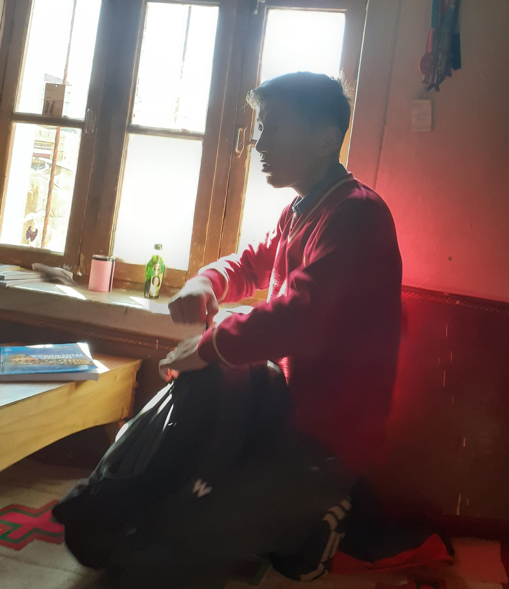

" I WISH THAT I NEVER MET YOU "
JULLAY RABYANG LAY
PLAY AND CONTINUE
Once upon a time, there was a kind old man named Mr.J who lived
alone in a cozy cottage by the river. Every day, he fed the birds
that visited his garden. One winter, a rare bluebird with a bright
red feather on its wing started coming to his window. Mr.J and
the bluebird became friends. They'd share stories, and the bird
even sang beautiful songs. But one day, Mr.J fell seriously ill.
Worried for his friend, the bluebird flew away. As the days passed,
Mr.J's health improved, but he missed his feathered friend. Then,
one sunny morning, the bluebird returned, perched on his windowsill.
It had brought a sprig of wildflowers as a get-well gift.
Their friendship remained a heartwarming true story for years to come.
E wo chon matla yin 😂
Once upon a time, there was an old man named Synth who looked
after a tall lighthouse near the sea. His job was to make sure ships
didn't crash into rocks during storms. One stormy night, a ship was
in trouble, and Synth used the lighthouse to guide it to safety.
Among the people on the ship was a young woman named Mystique.
She was very brave. As the storms went away, Synth and
Mystique became friends. Even though he was old and she
was young, they liked each other a lot. Their friendship showed
that sometimes, even in tough times, we can find special connections
that make our lives brighter.
This one too chonla yin.
I've been working on this Project for many days and plan to complete it on September 30th,
which marks our 2nd anniversary on WhatsApp using this current number. I'll send
you this letter on
October 7th
which marks our 3rd anniversary on Instagram instead of your 21st birthday since that's the day
we started chatting, and I understand you'll be busy on your special day.
HaHa lo suum zerna zche zerna lo wo bhut tsartok.
Duspo gazuk ga buth pata khorang cha merak.
I remember last year I wished you on the wrong date
because it was mentioned on your
Aadhaar card.
At that time, it was an extremely embarrassing
moment for me. From that moment, I pledged to
myself that I would wish you first on this
birthday, but .........
I also remember my birthday when you were
the only one who wished me. I'm happy that
at least one person remembered me on my
birthday, whether it was just for formality
🙏😅 or genuinely 🙏🥰. Thank you for that day.
That small message made my day (in chat 😅🤣
I'm saying #%@£%#@£).
Since childhood, birthday celebrations were a rarity to ___ , an experience that fellow hostellers can empathize with and understand,
and I didn't even know my own birthdate until class 9th(During 10th board exam registration i discovered).
I used to despise my birthday, but I had a fondness for other birthdays,
particularly those of day scholar students, where we would often receive candies and chocolates
Just like those one-rupee candies that brought so much joy during my hostel days, you bring happiness to my life now.
Happy Birthday to a truly beautiful soul,
both inside and out! 🎉 Your outer beauty
is captivating, but it's your inner kindness,
warmth, and generosity that truly shine. 🌟
May your day be as radiant as your heart, and
may your inner beauty continue light up the
lives of those around you. 🎂💖 Here's to
celebrating the remarkable person you are,
both in appearance and in the goodness that
fills your spirit. 🥳🎈 Wishing you a year
ahead filled with love, laughter, and
endless blessings. 🌼🎁🌟.
Ezuk ChatGPT zerduk when I give the command
about your birthday wishes.
You entered my life on
May 9, 2019

as a classmate.
Time goes on, and we completed our 11th and 12th
grades through offline and online modes. Now we are
in our 3rd year. I don't have many memories of
offline school with you, but I have many from online ,
the time I spent with you. I used to like you from
school. I'm still confused about words like like,
love, and crush. Same as earlier, time goes on,
as time and tide wait for none. With time, we
share our day, feelings 🤔, and meet frequently
through WhatsApp. And like this, I got addicted
to you. The more time I spend with you, the more
addicted I become. This is more captivating than drugs(Which I have never tried),
which consume my time and space in my mind, but I
enjoy every second and there is no regret. While I'm chatting with you, my
face is always in smile mode; I don't know why.
............................
During this summer holiday, one day I'm with family,
and I'm chatting in front of them. I had said earlier
that my face is always in smile mode when I chat
with you. At that moment, they observed me and
asked what happened to me, why I am so happy
and smiling. My reply: nothing 😁, just a video.
That moment made me realize I'm really enjoying
pure happiness.
❤️❤️❤️❤️❤️❤️❤️❤️❤️❤️❤️❤️❤️❤️❤️❤️❤️❤️❤️❤️❤️
About dating 🤣, I am happy that we are for the moment(darung yakin chamerakga nga.ngay mazak chos tay
yindo samadho) ,
and at that time, I didn't have any feelings towards you.
But after some days, I don't know why, somewhere I started
getting emotional thinking about that, and tears welled up
in my eyes. As time goes on, I think about you more and more,
and there's a moment when I get totally frustrated.
But when I receive a message, I enter smile mode and
am happy for a couple of days. It's more like fake
than true but 💯% true.I try to find out if I'm in love
or it's just infatuation.
I'm still on this journey.
One word of yours that rings in my ears and mind every time is the way you call me "jimmy". Im learning the craft of words so that I can pen down my emotions in the easiest way. I started writing a journal when you came into my dream on August 1st for the first time so that i can share you. From that day, every feeling I have, I write down. When I look back, it's mostly about you 😶🌫️😁
"FIRST TIME IN MY DREAM"
Today, on August 1, 2023, for the first time in my life, Rabyang appeared in my dream alongside her sister, Yangdol, for a brief moment. It seemed like we were at a gathering, and you were on the verge of entering the function. There was a considerable distance between us, and you were wearing the clothes you usually wear. With all my heart, I shouted your name, but behind me, Yangdol and, I believe, another sister, urged me to move forward. As a result, my eye contact with you shifted, and you also vanished from my dream.
YANG CHIG FROM བུ་ཚའི་སྙིང་གཏམ་
17-09-2023
Yesterday, I had a conversation with Rabyang for
one hour and a couple of minutes. It's like magic;
the stress I have, the pain I'm suffering,
everything is gone. It's magical. It was our second
video call of a duration of more than 1 hour. Earlier,
I loved chatting more than calling or video, but now
I'm really enjoying the call. Thank God I have someone
I can trust 🤔😁 and share my feelings with, just like I'm
sharing with you(whatsapp myself). I enjoyed every
moment with Rabyang. As time goes on, my feelings
toward her are growing stronger. I hope our relationship
will get stronger, but if not, goes like as it is.When I
talk and chat with Rabyang, for a couple of days, my mood is
on the next level—pure happiness. As I told Rabyang yesterday
about going to bed at 8:30 during Saturday, the actual reason
is that I'm just waiting for Rabyang's message so that I can
chat continuously without disturbance 😂.
When I feel lonely and stressed, I write, keeping
Rabyang's face in mind and the conversations we've
had earlier. It makes me feel like Rabyang is with me.
Also, the best thing during lonely times is reading
our chat. It gives me courage and inner peace. Thanks, Rabyang.You make
me the happiest person on Earth for a while. I feel joy when
I see your face, hear your voice, and read the messages you
type. When I feel depressed, all I do is think about you,
and it puts me in a good state.
My heart beats around the clock for you,
My eyes long to gaze upon your beauty always,
My ears crave the melody of your voice,
My nose yearns for the fragrance of your essence,
My tongue wrestles to express my feelings for you,
My entire being desires to be with you forever.
-Friends Nyon Nyampo Dispen Took more than half an hour During class Time
I've wanted to share this with you from many sessions,
but I lacked the courage to do so. Now, I'm feeling
lighter. When I sought a review from my friend, they
asked, "Is it a love letter?"
This is not a love/propose
letter nor an attempt to seek sympathy. It's just my feelings
toward you and the memories we share. Thanks for these
memories 😇.Now, on the occasion of your birthday,
❤️ my wish is for you to have a bright career and a healthy life. ❤️
That's it.
"If you ever feel lonely and have no one to share your
feelings with (though it's unlikely), remember me,
Rabyang, just from one message and Call.